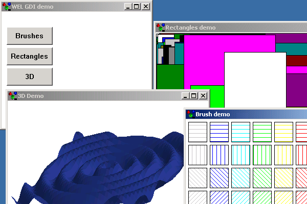

Brushes Sample

Compiling
To compile the example:
- Launch [BENCH].
- Select Use existing Ace (control file) and click OK.
- Browse to Eiffel50\examples\wel\brushes\.
- Choose Ace.ace
- Choose the directory where the project will be compiled, by default the same directory containing the Ace file.
- Click OK.
Running
After launching the program you will see a window displayed containing three push buttons marked "Brushes", "Rectangles" and "3D". Clicking "Brushes"
will open a new window demonsatrating different brushes available. Clicking "Rectangles" will open a new window within which many different shaped and colored rectangles will be drawn.
Clicking"3D" will open a new window demonstrating the use of multiple bitmaps for animation.
Under the Hood
Each of the three windows that are opened from the programs MAIN_WINDOW inherit
WEL_FRAME_WINDOW and contains code for generating their output.
BRUSHES_DEMO redefines idle_action to force a re-draw on the applicable windows.
Note. If enable_idle_action is not called, then idle_action is never executed.
This sample contains the following classes: